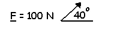
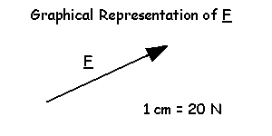
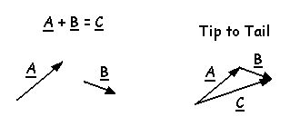

Trigonometry and Vector Addition
Scalars: A scalar is a quantity that has magnitude only such as mass, energy, and time.
Vectors: A vector is a quantity that has magnitude and direction such as force and velocity.
These lectures will distinguish vector quantities from scalars by underlining the labels of vectors. Since vectors have both magnitude and direction, the notation must include both. Below is an example of vector notation of a force 100 Newtons that acts at an angle of 40 degrees above horizontal.
Vectors can also be shown graphically with an arrow and a scale. The 100 N force vector above could be shown graphically with an arrow that is pointing upward at a 40 degree angle and with a length of 5 cm (see below).
Vector Addition
In Biomechanics, we often need to add vectors in order to determine the net effect. Since vectors have magnitude and direction, we must take the direction into account when we add vectors. We do this graphically by adding the vectors in a "tip to tail" fashion. That is, we arrange the vectors such that the tail of one vector is placed at the tip of the vector that it is to be added to. We do this without changing the direction of any of the vectors. The graphical addition of two vectors is shown below.
The vector C is called the resultant and its size could be measured with a ruler and its direction could be measured with a protractor.